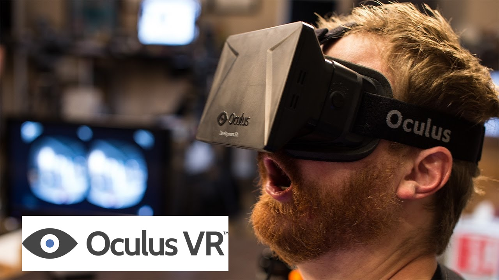
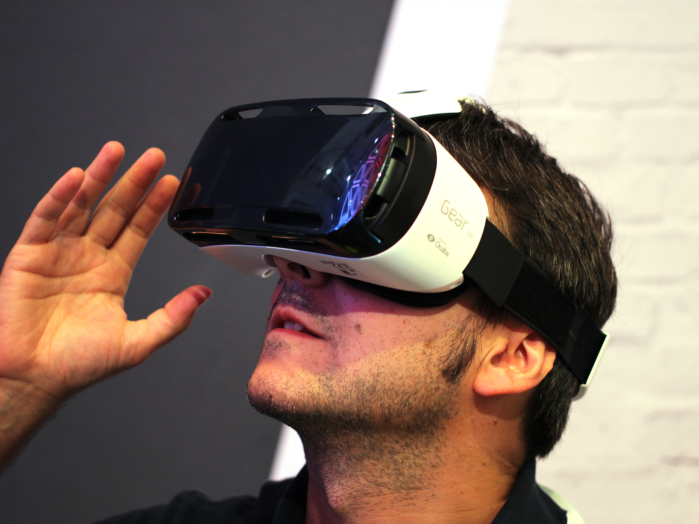

class: center, middle # Virtual Reality in Software Engineering: ## Affordances, Applications and Challenges Anthony Elliott* Brian Peiris Chris Parnin* .footnote[.right[*North Carolina State University, USA]] ??? Our research describes the application of Virtual Reality to Software Engineering but, before we dive into the paper's specifics, we'd like to give you a primer on the history and future of Virtual Reality. --- # Programming is hard - show video/demo of trying to rotate bird without - hand movement - depth perception - liveness --- # Virtual reality can help - show demo of rotating bird in RiftSketch - with hand movement - with depth perception - with liveness ??? appeals to 3D developers people will question if VR can help in non-gaming applications --- name: improves # VR improves on --- # VR improves on - Spatial Cognition ### VR provides: - stereoscopic vision -> depth - head rotation -- ### Effect - activates *place cells* - should improve memory, attention, and cognition (Parnin 2012) --- # VR improves on - Manipulation and motion ### VR provides: - direct manipulation - walking -- ### Effect - improve perception and retention (Noyes, 2008) - Walking stimulates creativity (Oppezzo, 2014) - improves sensation of depth (Held, 1963) --- # VR improves on - Feedback ### VR provides: - Overcoming the *Gulf of Evaluation* (Norman, 1988) - VR makes it easier to see what's going on -- ### Effect - Increased productivity --- name: ppp # VR: Past, Present, Future --- template: ppp ### - VR in science fiction .center[<img src="images/matrix.jpg" width="30%">] .footnote["The Matrix Poster" by Source. Licensed under Fair use via Wikipedia - http://en.wikipedia.org/wiki/File:The_Matrix_Poster.jpg#/media/File:The_Matrix_Poster.jpg] ??? Most people probably know virtual reality from science fiction movies like the Matrix trilogy. In real-life though, VR research enjoyed a golden age from the 1970s to the 1990s. --- template: ppp ### - VR in research -- ## 1960's  ??? Despite the limitations in hardware, with rudimentary computing and graphical power, heavy CRT displays and low-resolution LCDs, VR research boomed with new ideas and thousands of papers. --- template: ppp #### Hardware was not ready for VR ??? However, the hardware of the time ultimately failed to meet the expectations and mainstream consumer adoption was simply not viable. Virtual reality was once again relagated to science fiction, game arcades and a handful of VR labs in institutions that could afford it. A movie called "The Lawnmower Man" was a symbolic nail in VR's coffin. Released in 1992 and starring Pierce Brosnan as a scientist who used VR to enhance the mental powers of an unsuspecting gardener who then goes on to exact revenge with this superhuman abilities before uploading himself into the world's telecommunications grid. It was terrible. The public gave up on the idea of mainstream VR and researchers and developers returned to more practical work. --- template: ppp ### What changed? -- .floatRight[<img src="images/iphone.jpg" width="60%">] ## Smartphones! ??? Fast forward about 15 years and VR is back with a vengeance. While most large companies had given up on VR, in 2012 a teenager named Palmer Luckey was busy building duck-taped head-mounted displays. Luckey exploited the mobile phone hardware and graphics processing that all of us now take for granted and he built a device with commodity displays and commodity gyroscope and accelerometor sensors and combined that with a simple GPU effect to undo the distortion introduced by a simple lens. With that, he set into motion a series of events that attracted programming legend John Carmack, games behemoth Valve and formed a company which debuted with a kickstarter campaign that raised 2.4 million dollars, got acquired by Facebook for 2 billion and resurrected the VR industry. This new generation of VR devices provide an unparalleled experience at accessible prices. A combination of factors, including display resolution, sensor and display frequency, field of view, and latency, have been refined and continue to be improved in order to achieve that elusive goal of presence. When done right, VR can give users the undeniable sense of inhabiting the virtual world that they're presented with. Almost all the sensory queues that your brain uses are fooled into thinking that the virtual world is indeed the truth. Today several major companies are involved in VR including Facebook, Google, Microsoft, Facebook, Valve, Samsung, HTC. Consumer hardware is around the corner and the entertainment industry is adopting VR at an accelerating pace. Although games are the obvious and most popular application of at the moment, many in the community, including Mark Zuckerberg, believe that VR is bound to be a general computing platform that will rival the desktop and the mobile phone. --- # VR: Past, Present, Future - 2012 .center[] .footnote[http://i.ytimg.com/vi/P50fvL_EWYY/maxresdefault.jpg] --- # VR: Past, Present, Future - 2014 .center[] .footnote[http://www.wired.com/wp-content/uploads/2014/09/Samsung-Gear-VR-worn-by-Maurizio-Pesce.jpg] --- # How can you help - researchers ??? There are still some big questions that would benefit from research. -- ### - Visualizations ??? For 2D code - alongside code? - as needed peripheral visualizations? - completely immersive? -- ### - Immersive visual programming language ??? Like Scratch - education -- ### - Input forms ??? How can software engineers immersed in a virtual environment instruct the computer on what to do? Voice? Gestures? Text? --- # How can you help - developers * more powerful 3D editors --- # Recap .medium[ - programming is hard - VR can help improve - Spatial cognition - Manipulation and motion - Feedback - commodity hardware ] .footnote[Poster on Thursday from x-y pm] ???